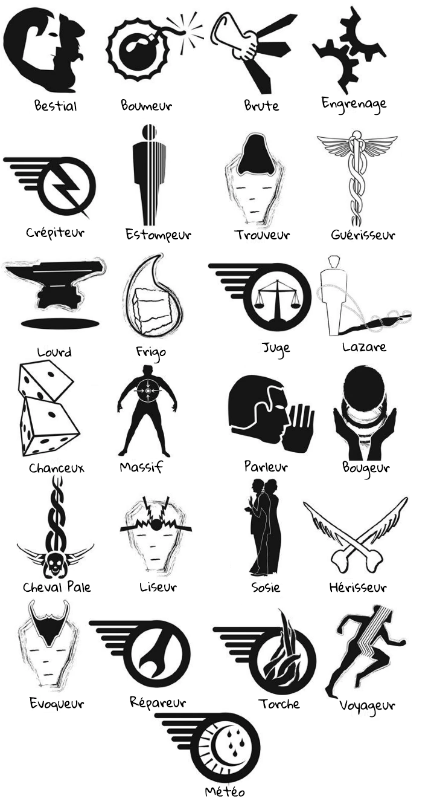

ADAPTATEUR : Actif capable de modifier leur vêtements - ou équipements - pour en créer d’autres, que ce soit d’autres vêtements voires des armes. Très recherchée dans l’armée, ils ont tendance à travailler en solitaire.
ANCIEN : Membre dirigeant de la société du Grimnoir.
ANGE DE LA MORT : Voir CHEVAL PÂLE
ANNULEUR DYMAXION : Appareil bloquant toute magie dans une zone restreinte. Certains effets magiques déjà lancés peuvent se maintenir en pénétrant dans la zone (tel un évoqué, ou le talent d’un guérisseur). Les annuleurs Dymaxion explosent au contact de la magie des Nixies. Généralement utilisé dans des prisons de l’Imperium.
ARCANISTE : Voir Engrenage - Rare type d’engrenage capable de contrôler, de voir et de placer des sortilèges sur tous les types d’objets possibles. Ils sont en outre capable de détecter les pouvoirs des autres.
ARCADIA : Une île flottante qui se déplace grâce à de nombreuse magie, créée par l’unité 731 et la scientifique Angelica Wald. Elle peut contenir jusqu’à 10 000 âme et sert de quartier général à l’Impérium.
ARTISTE : Rare type d’actif, mélange entre un arcaniste et un illusioniste, les artistes sont capables de rendre vivant leur peinture et leur dessin. Comme les arcanistes, les sortilèges qu’ils posent sont bien plus puissant que celui fait par un engrenage normal.
BABEL : Rare type d’actif capable de comprendre, de lire et de parler toutes les langues.
BESTIAL : Similaire aux dolittles, mais plus puissant et capables de contrôler les animaux par télépathie. Dans les cas extrêmes, un bestial peut projeter une partie de sa conscience dans la bête pour la contrôler totalement, y compris la faire parler à sa place, etc… Selon certaines rumeurs, certains bestiaux arriveraient à contrôler les êtres humains, mais il s’agit peut-être de propagande antimagique.
BLABLA : Voir PARLEUR
BOUGEUR : Le terme scientifique est « Télékinésique », c’est-à-dire capable de déplacer des objets par la force de son esprit. Les bougeurs sont très rares, et la plupart n’arrivent qu’à contrôler qu’un très petit nombre d’objet en même temps. Plus ils sont puissants, plus ils soulèvent des objets lourds et nombreux, et plus ils les déplacent rapidement. Le plus difficile est la précision du mouvement.
BOUMEUR : Type d’actif extrêmement rare, capable de créer des explosions à partir de rien.
BRÛLEUR : Voir TORCHE
BRUTE : Un des magiques les plus courants. Les brutes canalisent le pouvoir dans leur corps pour devenir plus fortes et plus résistantes. L’entrainement leur permet d’accomplir des exploits remarquables. Si elles emploient trop de pouvoir trop vite, elles risquent des blessures graves, voire la mort. Dans la plupart des pays, elles n’ont pas le droit de pratiquer un sport en professionnel, mais une brute n’a jamais de mal à trouver du travail.
CHANCEUX : Ils utilisent leur magie pour modifier les probabilités. Cette capacité à influencer le hasard se nomme « psychokinésie ». -1 à tous les jets de dés une fois le pouvoir activé.
CHANGEUR : Voir SOSIE – Dans certains cercle, on croit à l’existence d’une catégorie d’actif capables de changer d’apparence physique.
CHEVAL PÂLE : L’opposé du guérisseur. Leur contact provoque des maladies. Ce sont les actifs les plus violemment détestés. La plupart des normaux pensent qu’il s’agit d’une légende pour faire peur aux petits enfants.
CHEVALIER : Agent de la société du Grimnoir.
CREPITEUR : Capable de canaliser, de maîtriser et de contrôler le courant électrique. Ils sont assez communs et beaucoup gagnent leur vie comme électriciens ou dans l’industrie. Les plus puissants peuvent capter l’énergie de l’air et générer des éclairs.
DEMON : Voir EVOQUE
❌DOLITTLE : Actif capable de communiquer avec les animaux. Les plus doués peuvent contrôler l’animal, on les nomme hommes-bêtes ou bestiaux. Grâce à une série très populaire de livre pour enfants, dont le héros est un vétérinaire doué de ce pouvoir, c’est le type de magie le plus respecté.
ECLAIR : Voir CREPITEUR
ECLIPSE : Actif capable de contrôler les ténèbres, jusqu’à les rendre solide. A la manière des estompeurs, ils peuvent disparaître à l’intérieur de ces derniers, mais sont visibles en plein jour. De plus, il semble qu’ils soient excessivement sensibles à la lumière du soleil. Ils peuvent se téléporter d’ombre en ombre.
EDISON : Voir CREPITEUR – Terme poli pour crépiteur.
EMPATHE : Personne pouvant contrôler les émotions des personnes. Plus ils sont puissants plus leur contrôle est fort, pouvant aller jusqu’à le contrôle total d’une personne. Cependant, ils ressentent toujours les émotions des gens autour d’eux, et beaucoup sont agoraphobes.
ENGRENAGE : Deuxième catégorie d’actifs par ordre de popularité. Les engrenages font appel au pouvoir pour accroître leur intelligence et sont capables d’éclair de génie. Souvent, ils ne sont doués que dans un domaine.
ENNEMI : Prédateur qui pourchasse le pouvoir depuis très longtemps.
ENTROPISTE : Voir Eclipse
ENSORCELE : Désigne un objet ou une personne connectée au pouvoir par l’entremise d’un sortilège.
ESTOMPEUR : Capable de traverser des objets solides et devenir invisible, peut-être en modifiant sa densité pour que la matière étrangère passe entre ses propres molécules. Les estompeurs sont le contraire des massifs et sont unanimement détestés, avec une réputation de voleurs, d’assassins et de voyeurs.
EVOQUE : Créature appelée dans notre monde par un évoqueur. La force de la créature dépend du talent de l’évoqueur. Les évoqués ne communiquent que d’une façon rudimentaire et disposent d’un langage limité. On ne pas d’où ils viennent, ils n’acceptent d’en parler qu’en termes très vagues. Un évoqué reste sur terre jusqu’à qu’il soit détruit ou renvoyé.
EVOQUEUR : Actif capable de faire venir des créatures d’un autre monde qui obéissent à ses ordres. On ne sait pas d’où elles viennent. Les croyances personnelles de l’évoqueur semblent influencer l’apparence de l’évoqué. Les évoqueurs extrêmement puissants peuvent appeler des créatures terriblement fortes. Plus l’évoqué est puissant, plus il faut de pouvoir et de concentration pour en garder le contrôle.
FAUCHEUSE : Voir CHEVAL PÂLE
FRIGO : Toujours commode lorsqu’on a besoin de glaçon, le frigo peut faire baisser la température. Les actifs arrivent à faire geler de l’eau, et même du sang et des organes, instantanément. On parle de frigos capables de faire apparaître à volonté des murs de glace ou des stalactites, mais ces histoires viennent peut être des Aventures du capitaine John Iceberg, un programme radiophonique très populaire. Les frigos ne sont vulnérables ni au froid extrêmes, ni aux engelures.
GUÉRISSEUR : Catégorie d’actifs la plus rare et la plus populaire. Les guérisseurs sont capables d’accélérer le processus naturel de guérison. Même un guérisseur passif de faible pouvoir vaut une fortune. Les plus forts arrivent à soigner presque instantanément les blessures les plus graves. Même sans utiliser leur pouvoir, ils voient toujours l’intérieur du corps des gens. Certains racontent qu’un guérisseur peut aussi donner des maladies… Mais ce n’est jamais très bien pris au sérieux. Peut-être parce que les maladies étaient toujours très bénignes.
HERISSEUR : Actif très rare, capable de modifier à volonté sa structure osseuse.
HOMME-BÊTE : Voir BESTIAL
ILLUSIONNISTE : Affilié aux parleurs, les illusionnistes peuvent créer des illusions avec leur voix. Cela peut aller d’une simple illusion non physique, à quelque chose de réelle. Ils sont très employés dans les théâtres.
JUGE : type d’actif légendaire, censé distinguer la vérité du mensonge.
KANJIS : voir SORTILEGE – Mot japonais désignant les sortilèges physiques. Leurs kanjis sont en général plus artistique et plus stylisés que les signes d’Europe de l’Ouest utilisés par le Grimnoir, mais ils canalisent le pouvoir magique avec une grande efficacité.
LAMPE : Ennemis naturels des obscuris, les lampes sont capables de créer de la lumière et des rayons d’énergies. On dit que c’est la magie des lampes qui sont utilisés par les armes de tesla.
LAZARE : Actif capable d’enchaîner l’esprit d’une personne qui vient de mourir a cadavre de celle-ci, créant des morts-vivants torturés. Les lazares sont les pires de tous, la racaille du monde magique. Le seul bon lazare est un lazare mort.
LISEUR : Personne capable de lire les pensées d’autrui. Aussi appelée « télépathe ». Les liseurs faibles perçoivent des sentiments vagues et les forts arrivent à vous ouvrir le crâne pour regarder vos souvenirs comme dans un film. Les liseurs peuvent aussi émettre pensées et souvenirs. Plus leur cible est douée d’intelligence et de volonté, plus elle est difficile à lire, et plus elle a de chance de percevoir l’intrusion.
LINGUISTE : Voir Babel
LOURD : Voir POUSSEUR DE GRAVITE – Catégorie d’actif très répandue. La plupart des lourds ne peuvent modifier l’intensité de la gravité que dans une zone très limitée. Les plus forts arrivent à en modifier l’intensité et la direction dans une zone plus étendue. Les lourds sont l’un des rares types d’actif à partager les mêmes caractéristiques physiques : beaucoup sont grands et forts. Un stéréotype injuste veut qu’ils soient bêtes.
❌MACHINEUR : Voir ENGRENAGE – Terme d’habitude réservé aux engrenages les moins doués, capable de réparer plutôt qu’inventer.
MAGIQUE : Terme courant pour les individus dotés de pouvoir, actifs comme passifs.
MARCHEUR D’OMBRE : Voir ESTOMPEUR
❌MARIONNETTISTE : Type d’actif très rare, voir unique, capable de contrôler les autres par des filaments translucides.
MASSIF : Type d’actif extrêmement rare, capable d’augmenter sa densité physique au point d’en devenir presque invulnérable.
METEO : Magique capable d’influencer le temps. Les actifs forts arrivent à déclencher et à arrêter les tempêtes, à faire tourner les vents et parfois à les transformer en ouragans. Un emploi trop violent de ce don peut avoir de graves effets indésirables, comme le montre les évènements du Dust Bowl de 1927.
MORT VIVANT : Être créé par un lazare. La mort physique est survenue, mais le corps reste animé. La conscience et l’intelligence demeurent, ainsi que la douleur de ce qui a causé la mort. Les morts vivants ne peuvent guérir, et leur corps continue de se détériorer. La magie ne peut pas les réparer. Très peu de morts-vivants restent longtemps sains d’esprit ; ils sont de plus en plus violents et imprévisibles. Ils ne meurent vraiment que lorsque leur corps est détruit. Il y a en enfer une section réservée à ceux qui condamnent quelqu’un à devenir mort-vivant.
❌NIXIE : Actif capable de créer une sphère qui grossit sans arrêt et anéantit tout ce qu’elle touche. La zone affectée semble avoir une limite précise mais, vu la rareté de ses actifs, on ne peut pas le confirmer. On recense très peu de manifestations de ce pouvoir.
NORMAUX : Terme surtout utilisé par les actifs à propos des gens dénués de pouvoir magique. Selon qui l’emploie, le mot peut être péjoratif.
OUVREUR : Voir LAZARE – Abréviation d’ « ouvreur de tombes »
PARLEUR : Actif les plus détestés ou les plus aimés, selon qu’ils occupent une position d’autorité ou non. Les passifs influencent vos humeurs et vos émotions ; les actifs les plus puissants contrôlent carrément vos pensées et vos sentiments. Plus on est malin, plus le parleur a du mal à vous contrôler. Les parleurs ont tendance à travailler dans la politique.
❌PASSIF : Magique qui n’exerce pas de contrôle délibéré sur son pouvoir. Les passifs sont généralement capables d’accomplir un petit tour, mais quelle qu’en soit la raison, ils ne parviennent pas à développer leur talent. Par exemple, les lourds passifs arrivent d’instinct à soulever des objets pesants. Les guérisseurs passifs, par leur présence, accélèrent le processus de guérison, mais ils sont incapables de cibler des organes ou des blessures précises. Les liseurs passifs captent des fragments de pensées mais deviennent fous parce qu’ils n’arrivent pas à contrôler le flux mental qu’ils reçoivent.
POUSSEUR DE GRAVITE : Voir LOURD – Terme beaucoup plus respectueux pour désigner un lourd.
POUVOIR :
- L’énergie que détiennent tous les magiques. Quand ils consomment cette énergie, leurs réservent diminuent. La vitesse de rechargement et la quantité qu’on peut emmagasiner dépendent des talents innés de l’individu ainsi que son entraînement. On ignore encore si un magique est lié au pouvoir dès sa naissance ou si la connexion se fait durant la petite enfance.
- Être vivant dont provient toute l’énergie magique, son origine reste un mystère. Il donne des talents magiques à certains humains, et à mesure que nous les développons, l’énergie magique que nous possédons augmente. A notre mort, le pouvoir « digère » cette énergie. Le processus se répète. La croissance de la créature explique que les actifs sont de plus en plus nombreux.
REPAREUR : Voir GUERRISSEUR.
RUNE ARCANIUM : Dictionnaires des sortilèges découverts par la société du Grimnoir.
SOCIETE DU GRIMNOIR : Combinaison des mots français « grimoire » ou recueil de sortilège, et « noir », parce qu’à l’époque l’origine de la magie était mystérieuse. La société a été créé pour protéger les actifs des normaux et les normaux des actifs. Ses agents sont appelés « chevalier » et leurs chefs « anciens ». Ils œuvrent en secret.
SORTILEGE : Si l’on crée une représentation de l’une des sections du pouvoir, des énergies magiques spécifiques peuvent être attirés dans le dessin et reliées à celui-ci. Les sortilèges crées par le Grimnoir s’inspirent d’anciennes calligraphies européennes, alors que ceux de l’Imperium sont plus artistiques.
SOSIE : Type d’actifs extrêmement rare, qui modifie son apparence et sa voix pour imiter parfaitement quelqu’un d’autre. On ne sait pas si les sosies créent seulement l’illusion dans les esprits.
TELEPORTEUR : Voir VOYAGEUR – Terme scientifique récemment passé dans le vocabulaire courant.
TORCHE : Le plus courant des pouvoirs magiques. Les torches contrôlent le feu. Les passifs n’ont de pouvoir que sur les toutes petites flammes, alors que des actifs très puissants arrivent à éteindre l’incendie d’un dirigeable à hydrogène. Au contraire des frigos, invulnérable au froid, les torches peuvent brûler comme n’importe qui.
TROUVEUR : Proche de l’évoqueur, mais s’occupe d’esprit désincarnés plutôt que de créatures matérielles. Les trouveurs servent souvent d’éclaireur. Leur sensibilité varie beaucoup.
❌TUYAUX : Catégorie d’actif inconnue. Pendant la Grande Guerre, les espions ont découvert que les Allemands en gardaient un en réserve, mais nous ignorons si nous avons eu affaire à lui.
VOYAGEUR : L’un des seuls types d’actifs repérables à une caractéristique physique : tous les voyageurs connus ont les yeux gris. C’est u des dons les plus rares ; non pas à la naissance, mais parce que très peu vivent assez longtemps pour apprendre à contrôler leur pouvoir. Les voyageurs sont capables de se déplacer instantanément d’un endroit à un autre. Plus forts ils sont, plus loin ils peuvent aller et plus lourde est la charge qu’ils peuvent emporter.
VOYANT : Actif doué d’un pouvoir étrange, dont l’existence a longtemps été mise en doute. Les voyants sont capables de voir les avenirs possibles.
YEUX GRIS : Voir VOYAGEUR – Tous les voyageurs connus ont des yeux gris assez étrange leur permettant de voir dans le noir.
ZOMBIE : Voir MORT-VIVANT – Le premier lazare connu venait d’Haïti. Le mot « zombie « semble en être originaire.

Les quadrants¶
L’unité 731, a force d’étudier la magie, a déterminé que la majorité des pouvoirs étaient liés entre eux parce qu’ils appellent des “quadrants”. Des personnes très talentueuses peuvent développer les pouvoirs d’un même quadrants, et certains pouvoirs sont en faits liés à la maîtrise de plusieurs pouvoirs de ce quadrants. Certains pouvoirs, très peu nombreux, existaient à la fois dans plusieurs quadrants. Selon certaines théories, cela lierait les quadrants en un seul, mais personne - pour le moment - n’a réussi à développer à la fois les pouvoirs reliés. (Ses pouvoirs sont indiqués par une étoile)
Ainsi, il existerait les quadrants de :
- Élémentaristes : Météo / Frigo / Crépiteur / Lampe / Torche / Eclipse (⭐)
- Fantôme : Voyageur / Estompeur / Eclipse (⭐)
- Ingénieur : Arcaniste / Artiste / Engrenage / Machineur / Babel
- Mentaliste : Marionnettiste / Parleur / Liseur / Dolittle / Bestial / Illusionniste / Empathe
- Atomiste : Bougeur / Adaptateur / Boumeur
- Conjureur : Lazare / Trouveur / Evoqueur
- Galiléen : Lourd / Massif / Brute / Nixie
- Anatomiste : Guérisseur / Cheval Pâle / Hérisseur / Sosie
- Augure : Chanceux / Juge / Voyant
Créé: 17 juin 2022